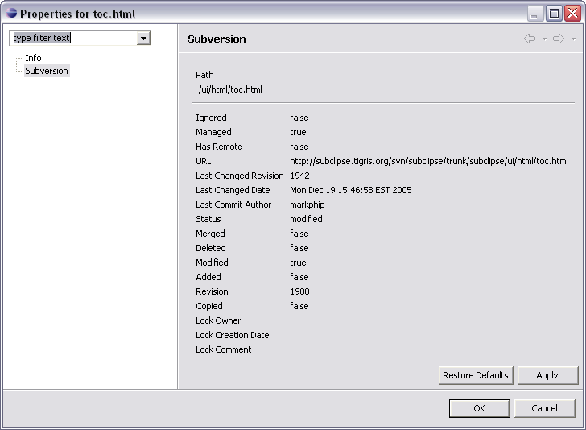

The SVN Resource Properties page is accessed via the context menu option.
All resources in a project managed by SVN have one additional property page. The property page appears like this:

The information available corresponds to the information given by svn info on the SVN command line client.
 This
Property page is not to be confused with SVN
Versioned Properties which are versioned tag-value pairs stored
in the repository, and edited via the
SVN Properties View.
This
Property page is not to be confused with SVN
Versioned Properties which are versioned tag-value pairs stored
in the repository, and edited via the
SVN Properties View.
Related Tasks
None
Related Reference